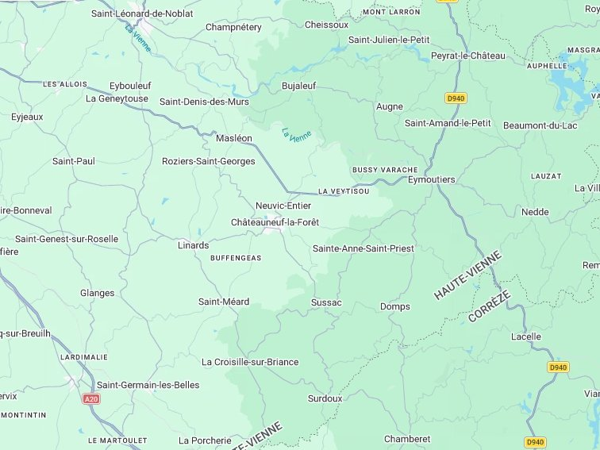
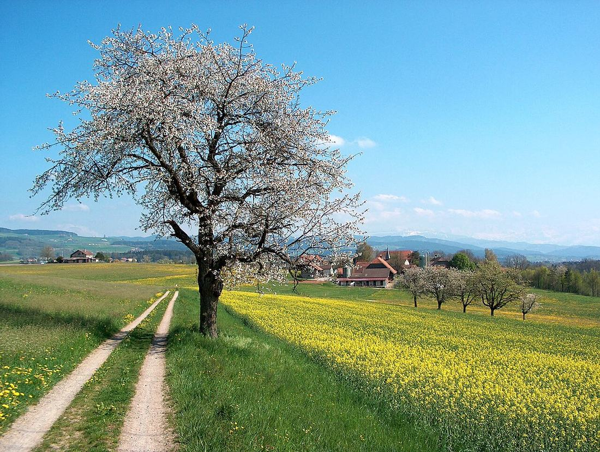

Chantier réalisé à Châteauneuf-la-Forêt (87) proche de la jonction avec Sainte-Anne-Saint-Priest (87) et Sussac (87)
Voici un chantier réalisé, parmi d'autres, dans ce secteur :

Secteur géographique du chantier. Fond de carte : Google.
Abattage complexe et exploitation forestière à Châteauneuf-la-Forêt.
- Abattage d'un très gros Merisier mort sur pied, au-dessus d'un bâtiment. L'arbre était déjà trop sec et pourri : personne ne voulait plus monter dedans (avec raison !). Alors j'ai mis en œuvre une méthode d'abattage originale et sur-mesure avec mon engin forestier, pour un résultat sûr et efficace.
100% de réussite
Ce chantier était près de chez vous ? Si vous le souhaitez, je peux vous dire qui était le client : vous le connaissez peut-être et dans ce cas vous aurez son avis en direct et sans filtre ! N'hésitez pas à me contacter pour ça.
Reconnaissez-vous les Merisiers ?
